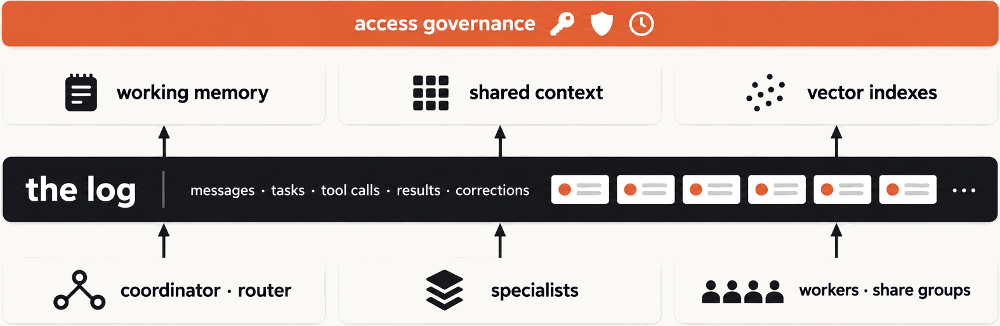

The whole picture first, then we build it from the bottom. Governance on top, projections above the log, disposable compute below. The log is the recorded truth; everything else is derived or replaceable.
One log, everything derived

The share consumer in six lines. Records are leased, not assigned; each one is acknowledged on its own: ACCEPT when the tool ran, RELEASE so another worker retries, REJECT for poison. One detail worth saying: a share group refuses auto.offset.reset, the start position is a group config on the broker.
Lease, ack, release
ShareGroup.java · Kafka 4.3var props = Kafka.consumer(group);
props.remove("auto.offset.reset"); // the broker decides where to start
props.put("share.acknowledgement.mode", "explicit"); // we acknowledge per recordtry (var worker = new KafkaShareConsumer<String, String>(props)) {
worker.subscribe(List.of(topic));
while (done < 5) {
for (var rec : worker.poll(Duration.ofSeconds(1))) { // leased, not ownedtry {
run(rec.value()); // slow, non-deterministic
worker.acknowledge(rec, AcknowledgeType.ACCEPT); // done
done++;
} catch (RuntimeException transientFailure) {
worker.acknowledge(rec, AcknowledgeType.RELEASE); // someone else retries
}
}
worker.commitSync(); // flush the acks
}
}
What a learned decision looks like on the wire: a bounded question in, a typed answer with probabilities out. No free text to parse. This is what a router or a triage step should call.